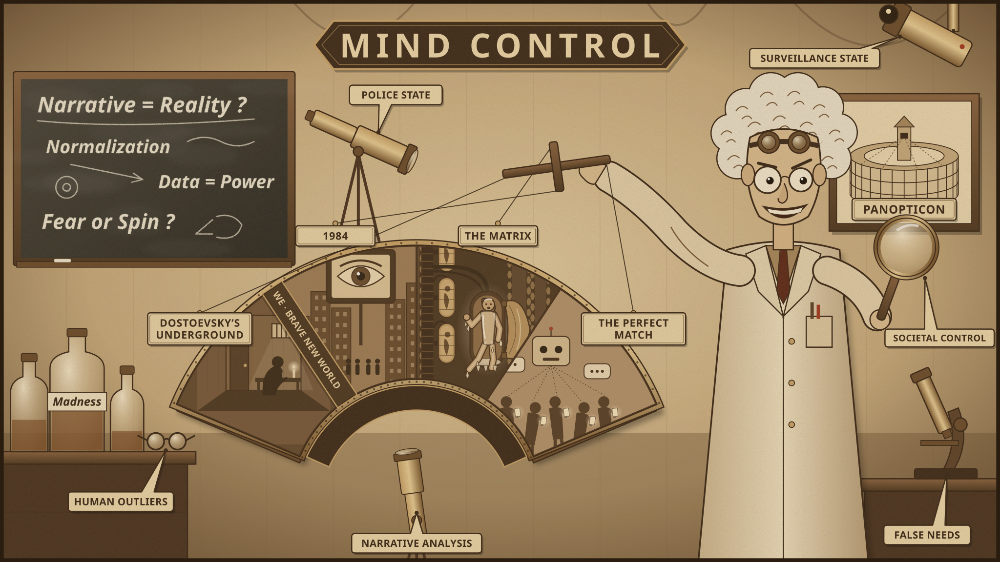
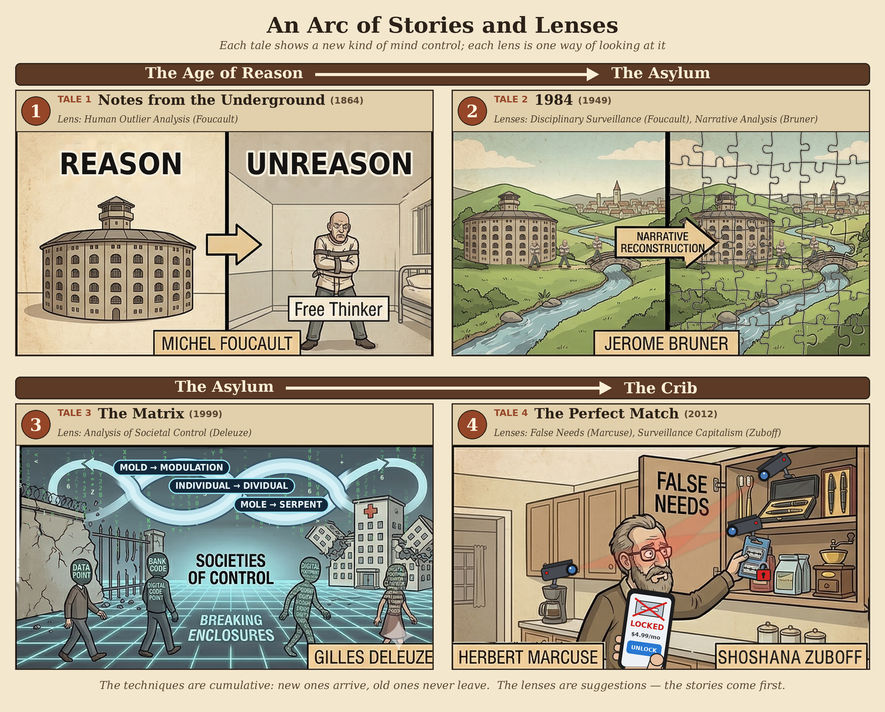

for Tales of Defiance to Mind Control in the Modern
Age
Scott Axelrod
Course Overview:

Look at modern age stories where societies impose/offer mind
control.
Consider characters who are rebelling.
Ask questions through various lenses.
Stories in a Dystopian Arc
Dostoyevsky’s Underground Man, isolated and being crushed by 2+2=4
reason .
Winston from “1984” being pounded by Big Brother to truly believe
2+2=5.
Neo from “The Matrix” perceiving that his entire world is a computer
simulation, seeing the simulation of 2+2=4 in binary.
Sai from “The Perfect Match” being nudged by the AI agent Tilly to
tell him that he prefers the beautiful girl in the “2+2=4” T-shirt.
Some Lenses

Human Outlier Analysis (Michel Foucault):
Madness and Confinement
Knowledge and Limits of Thought
Panopticism and Disciplinary surveillance
Narrative Analysis (Jerome Bruner ):
Societal Control (Gilles Deluze):
Foucault’s “enclosures” (prisons, schools, hospitals) are breaking
down.
We are no longer “individuals” in a room; we are “dividuals”—data
points, bank codes, and digital footprints that are tracked in an open,
continuous loop of control.
It’s not about being locked in a cage; it’s about being part of a
network where the “control” is fluid and constant.